Super Homepage
Code Societies Blog
Resources
Code Societies 2020 Blog Writing Guide
2020
Remote Control: Performance as Art, Performance as Behavior
Black Mirrors: Reimagining Race, Technology, and Justice
The Unfinished Sentence: Algorithmic Text Generation
Computational Exploration of Magical and Divinatory Language, Part 2
Radical Hardware (Transistor to CPU)
The Fuzzy Edges of Character Encoding with Everest Pipkin
Surveillance Studies with American Artist & Simone Browne
Computational Exploration of Magical and Divinatory Language with Allison Parrish, Part One
P2P Folder Poetry: An introduction to Re-introducing Yourself to Computers with Melanie Hoff
Code Societies Orientation with Melanie Hoff Neta Bomani & Emma Norton
Unlearning, a letter by Taeyoon Choi
Meet the Students & Teachers!
2019
Computational Methods of Code Societies
The Computational Scrawl ~ Session 1
Building Nets For Floating Data
Critical Simulation
Networked Terraforming
The Computational Scrawl ~ Session 2
Distributed Web of Care
Software as Ideology
we play programmed
Ethicsware
Cybernetics of Sex: Technology, Feminisms, & the Choreography of Culture
WYFY: Exorcizing Technology
Meet The 2019 Students
2018
Hacking the Attention Economy, Amplifying Discord and Hate
Authoring text under control: from automatic writing to autocomplete
Diversity & Inclusion in Surveillance AI
Software as Ideology
Smarter Home

plotter drawing by AC Gillette